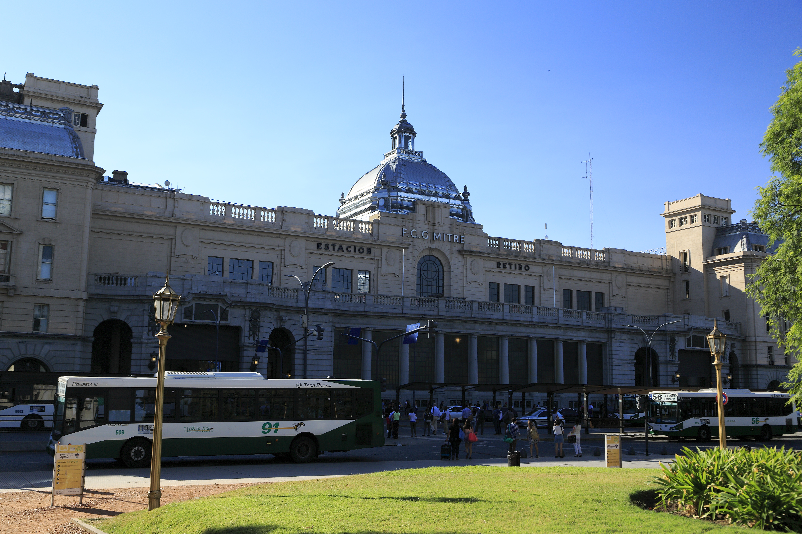

Tu viaje
empieza acá
Horarios, ramales y estado del servicio de la Línea Mitre, actualizados al minuto, sin vueltas.

Tigre34 min
J. L. Suárez28 min
Zárate1h 45m
MitreSuburbano
Estado del servicio
Información en tiempo real de los tres ramales de la línea.
Ramal Tigre
Servicio normal
8 min
Ramal J. L. Suárez
Servicio normal
11 min
Ramal Zárate
Demoras leves por obras en Escobar
19 min